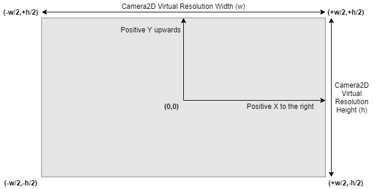
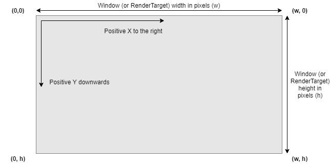
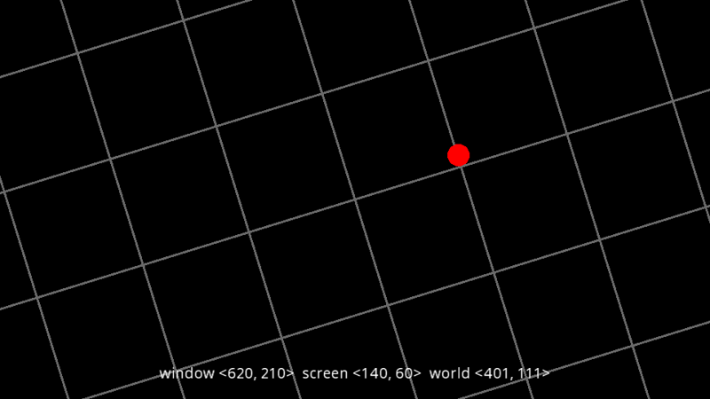

Coordinate systems
RenderStage Output
A RenderStage's output is render area size agnostic. This means that a RenderStage's output will fill the entire destination render area, which is either an entire RenderTarget or a rectangular area of one defined by a viewport.
The pixel size of the render area does not matter.
However, if the aspect ratio of the destination render area does not match that of the RenderStage's output, the output will be distorted (stretched or squashed) to fit.
Drawing
During Drawing, DrawRequests are submitted to, and rendered by, a DrawStage. The final position of vertices upon the render area is transformed by the assigned Camera2D.
Each Camera2D has a virtual resolution that defines the boundaries of screen space as well as world space once a camera's zoom, world focus point and rotation are also accounted for.
What this means in practice
A user can choose a virtual resolution and draw everything in relation to these effective screen dimensions, but it can be rendered at a final real resolution chosen simply by the an appropriately sized render area.
Coordinate Systems (spaces)
yak2D uses 3 coordinate systems (or spaces) for 2D rendering:
Screen Space
The coordinate system used when drawing with CoordinateSpace.Screen. Positions are defined in relation to a fixed visible area defined by the camera's virtual resolution.
The origin (0,0) is located in the centre. Positive X-axis runs from left to right, with positive Y-axis running 'upwards' towards the top of the visible area.
Visible positions in screen space are defined by:
-w/2 <= x < w/2
and...
-h/2 <= y < h/2
where:
- w = virtual resolution width
- h = virtual resolution height
Screen Space Diagram

World Space
The coordinate system used when drawing with CoordinateSpace.World. Positions are defined in relation to an origin. The visible area is defined by the camera's world focus point (position) in relation to the origin, the camera's zoom scalar, rotation and virtual resolution.
World space axis are similar to screen space, in that when unrotated, positive X-axis runs from left to right, with positive Y-axis running 'upwards' towards the top of the visible area.
Therefore, if the camera's world focus point is (0,0), it's zoom is 1.0 and there is no camera rotation, then a position in world space will match a position in screen space.
Window Space
Window space is used when defining viewports and is the coordinate system used for mouse position.
The origin (0,0) of window space is positioned at the top-left corner of the window (or RenderTarget), with positive X-axis running from left to right, and positive Y-axis running 'downwards' towards the bottom of the window (or RenderTarget).
Window space units are absolute pixels.
Valid / visible pixel positions in window space are defined by:
0 <= x < w
and...
0 <= y < h
where:
- w = Window or RenderTarget width
- h = Window or RenderTarget height
Window Space Diagram

Viewports
Viewports are used to define rectangular render areas of a RenderTarget.
Viewport position and size are defined in pixel units and use window space coordinates.
Texture Coordinates
yak2D texture coordinates are origin top-left and do not change across any graphics API backends. This is the same as used in Direct3D, Vulkan and Metal APIs, and is the same as window space.
Note: When writing shaders for a CustomVeldrid RenderStage, the user is responsible for accounting for the backend differences between graphics APIs.
When writing shaders for a CustomShader RenderStage, the vertex shader provided already accounts for the differences in OpenGL texture coordinates. Therefore all shaders can be written assuming origin top-left.
3D Rendering
The MeshRender RenderStage uses a Camera3D to manage the required view and projection matrices used during rendering.
yak2D uses a Right-Handed coordinate system, which does not change across any graphics API backends. This coordinate system is positive-x towards the right, positive-y upwards and positive-z out of the screen, towards the camera.
Note: When writing shaders for a CustomVeldrid RenderStage, the user is responsible for accounting for the backend differences between graphics APIs.
Mouse Input
yak2D provides mouse position as a position on the application window, in window space. Convert it to world or screen space with the helpers below.
Converting between spaces
ICoordinateTransforms converts positions between the three spaces for a given camera. It is available as the transforms parameter of Drawing(), and as yak.Helpers.CoordinateTransforms everywhere else.
| Method | Converts |
|---|---|
| WorldFromScreen, ScreenFromWorld | between world and screen space |
| WorldFromWindow, ScreenFromWindow | from a window position (such as the mouse) into world or screen space |
| WindowFromWorld, WindowFromScreen | from world or screen space to a window position |
Methods involving window space take an optional viewport, for when the camera is rendered into part of the window, and return a TransformResult: the converted Position, plus Contained, which says whether the point is actually inside the camera's view (or, converting to window space, inside the window).
A common use is finding what the mouse is pointing at in the game world:

public override bool Update(IServices yak, float secondsSinceLastUpdate)
{
var input = yak.Input;
if (input.WasMousePressedThisFrame(MouseButton.Left))
{
// Mouse positions are window pixels from the top-left. Convert to the camera's world space
var world = yak.Helpers.CoordinateTransforms.WorldFromWindow(input.MousePosition, _camera);
if (world.Contained)
{
_placed.Add(world.Position);
}
}
return base.Update(yak, secondsSinceLastUpdate);
}
public override void Drawing(IDrawing draw, IFps fps, IInput input, ICoordinateTransforms transforms,
float secondsSinceLastDraw, float secondsSinceLastUpdate)
{
// A world space grid, seen through a zoomed and rotated camera
for (var n = -10; n <= 10; n++)
{
draw.Helpers.DrawLine(_drawStage, CoordinateSpace.World, new Vector2(n * 100.0f, -1000.0f), new Vector2(n * 100.0f, 1000.0f), 2.0f, Colour.DimGray, 0.9f);
draw.Helpers.DrawLine(_drawStage, CoordinateSpace.World, new Vector2(-1000.0f, n * 100.0f), new Vector2(1000.0f, n * 100.0f), 2.0f, Colour.DimGray, 0.9f);
}
foreach (var p in _placed)
{
draw.Helpers.DrawColouredPoly(_drawStage, CoordinateSpace.World, Colour.Gold, p, 5, 14.0f, 0.5f);
}
// The cursor, in world space and screen space
var world = transforms.WorldFromWindow(input.MousePosition, _camera);
var screen = transforms.ScreenFromWindow(input.MousePosition, _camera);
if (world.Contained)
{
draw.Helpers.DrawColouredPoly(_drawStage, CoordinateSpace.World, Colour.Red, world.Position, 32, 10.0f, 0.4f);
draw.DrawString(_drawStage, CoordinateSpace.Screen,
$"window {input.MousePosition:0} screen {screen.Position:0} world {world.Position:0}",
Colour.White, 20.0f, new Vector2(0.0f, -230.0f), TextJustify.Centre, 0.3f, 1);
}
}
The conversions take the camera's focus, zoom, rotation and virtual resolution into account, and the window's current size, so they keep working when the window is resized.